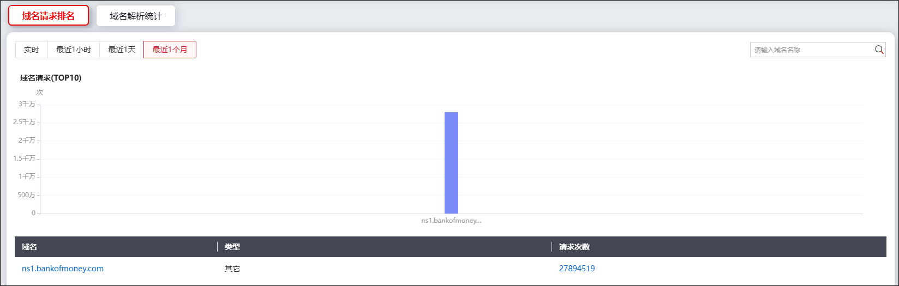
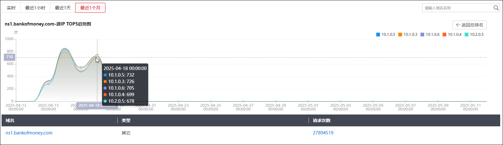
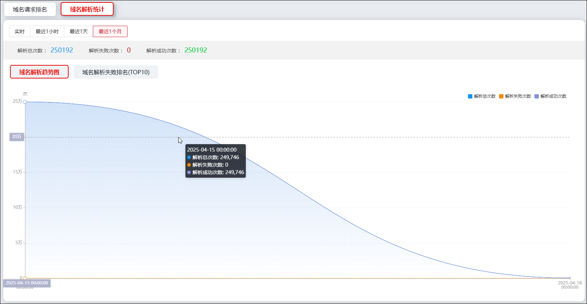
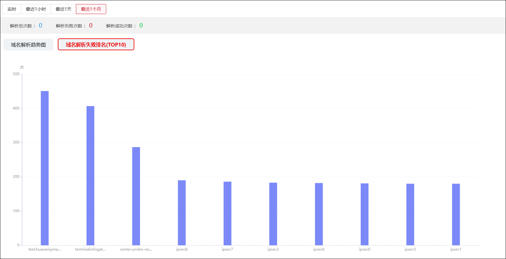

DNS监控模块展示域名请求和域名解析相关信息，帮助管理员更好的掌握内部网络状态，发现潜在危险。
| 步骤1 | 选择 ，默认激活“域名请求排名”页签，界面如下图所示。 |

界面以柱状图展示了统计时间范围内排名前10的域名请求，以列表的方式展示了统计时间段内域名请求的域名名称、类型和请求次数。点击列表中域名或请求次数，可跳转至该域名的详细访问信息界面，如下图所示。

点击界面上方的时间段按钮，可切换统计时段。
| 步骤2 | 查看域名解析统计 |
激活“域名解析统计”页签，可查看域名解析趋势图和域名解析失败排名TOP10，界面如下图所示。

界面上方以数据形式展示了解析总次数、解析失败次数和解析成功次数。域名解析趋势图和域名解析失败排名TOP10查看步骤如下：
Ø域名解析趋势图：展示统计时间段内所有域名解析次数随时间的变化趋势。将鼠标指针移至图表上方，可以查看相应时间域名解析总次数、域名解析失败次数和域名解析成功次数，如上图所示。
Ø域名解析失败排名TOP10：展示域名解析失败次数排名前10的域名信息，如下图所示。将鼠标指针移至柱状图上方，可以查看统计周期内相应DNS域名解析失败的总次数。
